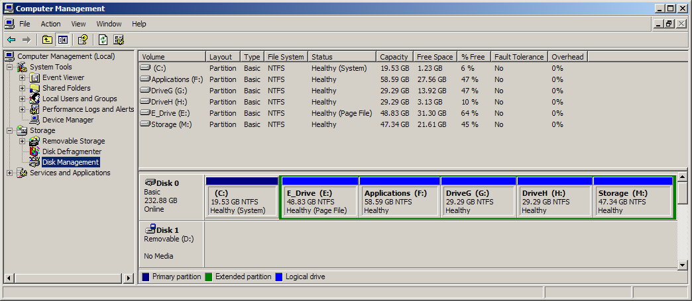
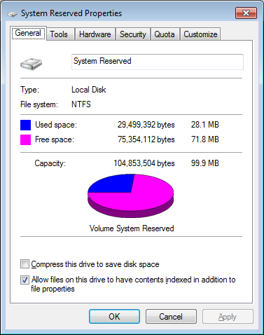
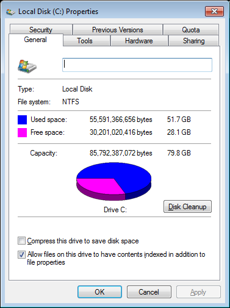

Starting the Computer
A computer won't do anything until it is powered-up.The Master Boot Record (MBR)
The MBR is 512 bytes:System IDs
00 01 02 03 04 05 06 07 08 09 0A 0B 0C 0D 0E 0F -------------------------------------------------------------------------- 000000 33 C0 8E D0 BC 00 7C FB 50 07 50 1F FC BE 1B 7C 3.....|.P.P....| 000010 BF 1B 06 50 57 B9 E5 01 F3 A4 CB BD BE 07 B1 04 ...PW........... 000020 38 6E 00 7C 09 75 13 83 C5 10 E2 F4 CD 18 8B F5 8n.|.u.......... 000030 83 C6 10 49 74 19 38 2C 74 F6 A0 B5 07 B4 07 8B ...It.8,t....... 000040 F0 AC 3C 00 74 FC BB 07 00 B4 0E CD 10 EB F2 88 ..<.t........... 000050 4E 10 E8 46 00 73 2A FE 46 10 80 7E 04 0B 74 0B N..F.s*.F..~..t. 000060 80 7E 04 0C 74 05 A0 B6 07 75 D2 80 46 02 06 83 .~..t....u..F... 000070 46 08 06 83 56 0A 00 E8 21 00 73 05 A0 B6 07 EB F...V...!.s..... 000080 BC 81 3E FE 7D 55 AA 74 0B 80 7E 10 00 74 C8 A0 ..>.}U.t..~..t.. 000090 B7 07 EB A9 8B FC 1E 57 8B F5 CB BF 05 00 8A 56 .......W.......V 0000A0 00 B4 08 CD 13 72 23 8A C1 24 3F 98 8A DE 8A FC .....r#..$?..... 0000B0 43 F7 E3 8B D1 86 D6 B1 06 D2 EE 42 F7 E2 39 56 C..........B..9V 0000C0 0A 77 23 72 05 39 46 08 73 1C B8 01 02 BB 00 7C .w#r.9F.s......| 0000D0 8B 4E 02 8B 56 00 CD 13 73 51 4F 74 4E 32 E4 8A .N..V...sQOtN2.. 0000E0 56 00 CD 13 EB E4 8A 56 00 60 BB AA 55 B4 41 CD V......V.`..U.A. 0000F0 13 72 36 81 FB 55 AA 75 30 F6 C1 01 74 2B 61 60 .r6..U.u0...t+a` 000100 6A 00 6A 00 FF 76 0A FF 76 08 6A 00 68 00 7C 6A j.j..v..v.j.h.|j 000110 01 6A 10 B4 42 8B F4 CD 13 61 61 73 0E 4F 74 0B .j..B....aas.Ot. 000120 32 E4 8A 56 00 CD 13 EB D6 61 F9 C3 49 6E 76 61 2..V.....a..Inva 000130 6C 69 64 20 70 61 72 74 69 74 69 6F 6E 20 74 61lid partition ta 000140 62 6C 6500 45 72 72 6F 72 20 6C 6F 61 64 69 6Eble.Error loadin 000150 67 20 6F 70 65 72 61 74 69 6E 67 20 73 79 73 74g operating syst 000160 65 6D00 4D 69 73 73 69 6E 67 20 6F 70 65 72 61em.Missing opera 000170 74 69 6E 67 20 73 79 73 74 65 6D00 00 00 00 00ting system. .... 000180 00 00 00 00 00 00 00 00 00 00 00 00 00 00 00 00 ................ 000190 00 00 00 00 00 00 00 00 00 00 00 00 00 00 00 00 ................ 0001A0 00 00 00 00 00 00 00 00 00 00 00 00 00 00 00 00 ................ 0001B0 00 00 00 00 00 2C 44 63 C7 A2 27 25 00 0080 01 .....,Dc........ 0001C0 01 0007 FE FF FF 3F 00 00 00 37 16 71 0200 00 ......?....@^... 0001D0 C1 FF0F FE FF FF 76 16 71 02 0B 2F AB 1A 00 00 ................ 0001E0 00 00 00 00 00 00 00 00 00 00 00 00 00 00 00 00 ................ 0001F0 00 00 00 00 00 00 00 00 00 00 00 00 00 00 55 AA ..............U. -------------------------------------------------------------------------- 00 01 02 03 04 05 06 07 08 09 0A 0B 0C 0D 0E 0F
A Linux MBR:
Partition sizes:
00 01 02 03 04 05 06 07 08 09 0A 0B 0C 0D 0E 0F -------------------------------------------------------------------------- 000000 EB 48 90 10 8E D0 BC 00 B0 B8 00 00 8E D8 8E C0 .H.............. 000010 FB BE 00 7C BF 00 06 B9 00 02 F3 A4 EA 21 06 00 ...|.........!.. 000020 00 BE BE 07 38 04 75 0B 83 C6 10 81 FE FE 07 75 ....8.u........u 000030 F3 EB 16 B4 02 B0 01 BB 00 7C B2 80 8A 74 03 02 .........|...t.. 000040 80 00 00 20 01 00 00 00 00 02 FA 90 90 F6 C2 80 ... ............ 000050 75 02 B2 80 EA 59 7C 00 00 31 C0 8E D8 8E D0 BC u....Y|..1...... 000060 00 20 FB A0 40 7C 3C FF 74 02 88 C2 52 BE 7F 7D . ..@|<.t...R..} 000070 E8 34 01 F6 C2 80 74 54 B4 41 BB AA 55 CD 13 5A .4....tT.A..U..Z 000080 52 72 49 81 FB 55 AA 75 43 A0 41 7C 84 C0 75 05 RrI..U.uC.A|..u. 000090 83 E1 01 74 37 66 8B 4C 10 BE 05 7C C6 44 FF 01 ...t7f.L...|.D.. 0000A0 66 8B 1E 44 7C C7 04 10 00 C7 44 02 01 00 66 89 f..D|.....D...f. 0000B0 5C 08 C7 44 06 00 70 66 31 C0 89 44 04 66 89 44 \..D..pf1..D.f.D 0000C0 0C B4 42 CD 13 72 05 BB 00 70 EB 7D B4 08 CD 13 ..B..r...p.}.... 0000D0 73 0A F6 C2 80 0F 84 EA 00 E9 8D 00 BE 05 7C C6 s.............|. 0000E0 44 FF 00 66 31 C0 88 F0 40 66 89 44 04 31 D2 88 D..f1...@f.D.1.. 0000F0 CA C1 E2 02 88 E8 88 F4 40 89 44 08 31 C0 88 D0 ........@.D.1... 000100 C0 E8 02 66 89 04 66 A1 44 7C 66 31 D2 66 F7 34 ...f..f.D|f1.f.4 000110 88 54 0A 66 31 D2 66 F7 74 04 88 54 0B 89 44 0C .T.f1.f.t..T..D. 000120 3B 44 08 7D 3C 8A 54 0D C0 E2 06 8A 4C 0A FE C1 ;D.}<.T.....L... 000130 08 D1 8A 6C 0C 5A 8A 74 0B BB 00 70 8E C3 31 DB ...l.Z.t...p..1. 000140 B8 01 02 CD 13 72 2A 8C C3 8E 06 48 7C 60 1E B9 .....r*....H|`.. 000150 00 01 8E DB 31 F6 31 FF FC F3 A5 1F 61 FF 26 42 ....1.1.....a.&B 000160 7C BE 85 7D E8 40 00 EB 0E BE 8A 7D E8 38 00 EB |..}.@.....}.8.. 000170 06 BE 94 7D E8 30 00 BE 99 7D E8 2A 00 EB FE 47 ...}.0...}.*...G 000180 52 55 42 20 00 47 65 6F 6D 00 48 61 72 64 20 44 RUB .Geom.Hard D 000190 69 73 6B 00 52 65 61 64 00 20 45 72 72 6F 72 00 isk.Read. Error. 0001A0 BB 01 00 B4 0E CD 10 AC 3C 00 75 F4 C3 00 00 00 ........<.u..... 0001B0 00 00 00 00 00 00 00 00 39 50 01 00 00 00 80 01 ........9P...... 0001C0 01 00 83 FE 3F 83 3F 00 00 00 45 5B 20 00 00 00 ....?.?...E[ ... 0001D0 01 84 FD FE FF FF 84 5B 20 00 0D 2F C0 03 00 FE .......[ ../.... 0001E0 FF FF FD FE FF FF 91 8A E0 03 0D 2F C0 03 00 FE .........../.... 0001F0 FF FF 05 FE FF FF 9E B9 A0 07 23 A0 CF 6C 55 AA ..........#..lU. -------------------------------------------------------------------------- 00 01 02 03 04 05 06 07 08 09 0A 0B 0C 0D 0E 0F
A USB flash drive MBR:
System IDs
00 01 02 03 04 05 06 07 08 09 0A 0B 0C 0D 0E 0F -------------------------------------------------------------------------- 000000 FA BE 00 7C BF 00 7A B9 00 01 FC 0E 1F 0E 07 F3 ...|..z......... 000010 A5 EA 16 7A 00 00 BB BE 7B 33 C9 80 3F 80 75 06 ...z....{3..?.u. 000020 FE C5 8B F3 EB 07 80 3F 00 75 02 FE C1 83 C3 10 .......?.u...... 000030 81 FB FE 7B 72 E5 83 F9 04 74 0B 81 F9 03 01 74 ...{r....t.....t 000040 0A BB A5 7A EB 2C BB 87 7A EB 27 8B 4C 02 8B 14 ...z.,..z.'.L... 000050 B8 01 02 BB 00 7C CD 13 73 05 BB BC 7A EB 13 2E .....|..s...z... 000060 A1 FE 7D 3D 55 AA 74 05 BB BC 7A EB 05 EA 00 7C ..}=U.t...z....| 000070 00 00 2E 8A 07 3C 00 74 0C 53 BB 07 00 B4 0E CD .....<.t.S...... 000080 10 5B 43 EB ED EB FE 4E 6F 20 62 6F 6F 74 61 62 .[C....No bootab 000090 6C 65 20 70 61 72 74 69 74 6F 6E 20 69 6E 20 74 le partiton in t 0000A0 61 62 6C 65 00 49 6E 76 61 6C 69 64 20 50 61 72 able.Invalid Par 0000B0 74 69 74 6F 6E 20 74 61 62 6C 65 00 49 6E 76 61 titon table.Inva 0000C0 6C 69 64 20 6F 72 20 64 61 6D 61 67 65 64 20 42 lid or damaged B 0000D0 6F 6F 74 61 62 6C 65 20 70 61 72 74 69 74 69 6F ootable partitio 0000E0 6E 00 00 00 00 00 00 00 00 00 00 00 00 00 00 00 n............... 0000F0 00 00 00 00 00 00 00 00 00 00 00 00 00 00 00 00 ................ 000100 00 00 00 00 00 00 00 00 00 00 00 00 00 00 00 00 ................ 000110 00 00 00 00 00 00 00 00 00 00 00 00 00 00 00 00 ................ 000120 00 00 00 00 00 00 00 00 00 00 00 00 00 00 00 00 ................ 000130 00 00 00 00 00 00 00 00 00 00 00 00 00 00 00 00 ................ 000140 00 00 00 00 00 00 00 00 00 00 00 00 00 00 00 00 ................ 000150 00 00 00 00 00 00 00 00 00 00 00 00 00 00 00 00 ................ 000160 00 00 00 00 00 00 00 00 00 00 00 00 00 00 00 00 ................ 000170 00 00 00 00 00 00 00 00 00 00 00 00 00 00 00 00 ................ 000180 00 00 00 00 00 00 00 00 00 00 00 00 00 00 00 00 ................ 000190 00 00 00 00 00 00 00 00 00 00 00 00 00 00 00 00 ................ 0001A0 00 00 00 00 00 00 00 00 00 00 00 00 00 00 00 00 ................ 0001B0 00 00 00 00 00 00 00 00 4C B1 D3 E0 00 00 80 01 ........L....... 0001C0 01 00 0E 0F E0 5F 20 00 00 00 E0 BF 1E 00 00 00 ....._.......... 0001D0 00 00 00 00 00 00 00 00 00 00 00 00 00 00 00 00 ................ 0001E0 00 00 00 00 00 00 00 00 00 00 00 00 00 00 00 00 ................ 0001F0 00 00 00 00 00 00 00 00 00 00 00 00 00 00 55 AA ..............U. -------------------------------------------------------------------------- 00 01 02 03 04 05 06 07 08 09 0A 0B 0C 0D 0E 0F
A disk with no boot record:
Quick Reference:
00 01 02 03 04 05 06 07 08 09 0A 0B 0C 0D 0E 0F -------------------------------------------------------------------------- 000000 00 00 00 00 00 00 00 00 00 00 00 00 00 00 00 00 ................ 000010 00 00 00 00 00 00 00 00 00 00 00 00 00 00 00 00 ................ 000020 00 00 00 00 00 00 00 00 00 00 00 00 00 00 00 00 ................ 000030 00 00 00 00 00 00 00 00 00 00 00 00 00 00 00 00 ................ 000040 00 00 00 00 00 00 00 00 00 00 00 00 00 00 00 00 ................ 000050 00 00 00 00 00 00 00 00 00 00 00 00 00 00 00 00 ................ 000060 00 00 00 00 00 00 00 00 00 00 00 00 00 00 00 00 ................ 000070 00 00 00 00 00 00 00 00 00 00 00 00 00 00 00 00 ................ 000080 00 00 00 00 00 00 00 00 00 00 00 00 00 00 00 00 ................ 000090 00 00 00 00 00 00 00 00 00 00 00 00 00 00 00 00 ................ 0000A0 00 00 00 00 00 00 00 00 00 00 00 00 00 00 00 00 ................ 0000B0 00 00 00 00 00 00 00 00 00 00 00 00 00 00 00 00 ................ 0000C0 00 00 00 00 00 00 00 00 00 00 00 00 00 00 00 00 ................ 0000D0 00 00 00 00 00 00 00 00 00 00 00 00 00 00 00 00 ................ 0000E0 00 00 00 00 00 00 00 00 00 00 00 00 00 00 00 00 ................ 0000F0 00 00 00 00 00 00 00 00 00 00 00 00 00 00 00 00 ................ 000100 00 00 00 00 00 00 00 00 00 00 00 00 00 00 00 00 ................ 000110 00 00 00 00 00 00 00 00 00 00 00 00 00 00 00 00 ................ 000120 00 00 00 00 00 00 00 00 00 00 00 00 00 00 00 00 ................ 000130 00 00 00 00 00 00 00 00 00 00 00 00 00 00 00 00 ................ 000140 00 00 00 00 00 00 00 00 00 00 00 00 00 00 00 00 ................ 000150 00 00 00 00 00 00 00 00 00 00 00 00 00 00 00 00 ................ 000160 00 00 00 00 00 00 00 00 00 00 00 00 00 00 00 00 ................ 000170 00 00 00 00 00 00 00 00 00 00 00 00 00 00 00 00 ................ 000180 00 00 00 00 00 00 00 00 00 00 00 00 00 00 00 00 ................ 000190 00 00 00 00 00 00 00 00 00 00 00 00 00 00 00 00 ................ 0001A0 00 00 00 00 00 00 00 00 00 00 00 00 00 00 00 00 ................ 0001B0 00 00 00 00 00 00 00 00 9B DB 78 07 00 00 00 01 ..........x..... 0001C0 01 00 83 FE FF FF 3F 00 00 00 8D 29 00 0A 00 FE ......?....).... 0001D0 FF FF 83 FE FF FF CC 29 00 0A 2F 53 00 7D 00 FE .......)../S.}.. 0001E0 FF FF 83 FE FF FF FB 7C 00 87 46 EA A7 27 00 00 .......|..F..'.. 0001F0 00 00 00 00 00 00 00 00 00 00 00 00 00 00 55 AA ..............U. -------------------------------------------------------------------------- 00 01 02 03 04 05 06 07 08 09 0A 0B 0C 0D 0E 0F
Detailed References:
System ID Developer Description 0x05 IBM Extended partition 0x06 Compaq FAT16 0x07 Microsoft HPFS or NTFS 0x0B Microsoft FAT32 0x0E Microsoft Windows 95 FAT16 with LBA 0x0F Microsoft Extended partition with LBA 0x82 GNU/Linux Linux swap 0x83 GNU/Linux Any native Linux file system 0xFD GNU/Linux Linux RAID auto
The fdisk utility on Linux understands these partition types:
To dump the first sector of the first hard disk to a file (if is input file and of is output file):0 Empty 24 NEC DOS 81 Minix / old Lin bf Solaris 1 FAT12 27 Hidden NTFS Win 82 Linux swap / So c1 DRDOS/sec (FAT- 2 XENIX root 39 Plan 9 83 Linux c4 DRDOS/sec (FAT- 3 XENIX usr 3c PartitionMagic 84 OS/2 hidden C: c6 DRDOS/sec (FAT- 4 FAT16 <32M 40 Venix 80286 85 Linux extended c7 Syrinx 5 Extended 41 PPC PReP Boot 86 NTFS volume set da Non-FS data 6 FAT16 42 SFS 87 NTFS volume set db CP/M / CTOS / . 7 HPFS/NTFS/exFAT 4d QNX4.x 88 Linux plaintext de Dell Utility 8 AIX 4e QNX4.x 2nd part 8e Linux LVM df BootIt 9 AIX bootable 4f QNX4.x 3rd part 93 Amoeba e1 DOS access a OS/2 Boot Manag 50 OnTrack DM 94 Amoeba BBT e3 DOS R/O b W95 FAT32 51 OnTrack DM6 Aux 9f BSD/OS e4 SpeedStor c W95 FAT32 (LBA) 52 CP/M a0 IBM Thinkpad hi eb BeOS fs e W95 FAT16 (LBA) 53 OnTrack DM6 Aux a5 FreeBSD ee GPT f W95 Ext'd (LBA) 54 OnTrackDM6 a6 OpenBSD ef EFI (FAT-12/16/ 10 OPUS 55 EZ-Drive a7 NeXTSTEP f0 Linux/PA-RISC b 11 Hidden FAT12 56 Golden Bow a8 Darwin UFS f1 SpeedStor 12 Compaq diagnost 5c Priam Edisk a9 NetBSD f4 SpeedStor 14 Hidden FAT16 <32M 61 SpeedStor ab Darwin boot f2 DOS secondary 16 Hidden FAT16 63 GNU HURD or Sys af HFS / HFS+ fb VMware VMFS 17 Hidden HPFS/NTF 64 Novell Netware b7 BSDI fs fc VMware VMKCORE 18 AST SmartSleep 65 Novell Netware b8 BSDI swap fd Linux raid auto 1b Hidden W95 FAT3 70 DiskSecure Mult bb Boot Wizard hid fe LANstep 1c Hidden W95 FAT3 75 PC/IX be Solaris boot ff BBT 1e Hidden W95 FAT1 80 Old Minix
To view the file:dd if=/dev/sda of=mbr.bin bs=512 count=1
Note that dd and od are in the Cygwin utilities on Windows. There is also a tool called dump in Cygwin that works well. dd and od are native to Linux. Consult your Windows documentation to see if these tools exist natively in Windows. You can download a Windows tool similar to dump called dumpit, which many of you should recognize.od -x mbr.bin
dd for Windows here.WARNING: BE VERY CAREFUL WITH THE dd COMMAND SHOWN ABOVE. USING THE WRONG OUTPUT FILE (of) CAN TOTALLY SCREW UP YOUR SYSTEM!!! MAKE SURE YOU ARE ABSOLUTELY SURE THAT YOU DIDN'T SWITCH if and of.
Don't forget the man pages. If you're running Windows and have Cygwin installed (and everyone should), at the command prompt type:
to see some help on the tool. Of course, you can Google for many examples of this utility.man dd
An example of a partitioned disk in Windows XP:

An example of a partitioned disk in Linux:
An example of a partitioned disk in Windows 7:
The first partition is the 100 MB EFI System PartitionEFI System Partition
(ESP) used by Windows.
Partition properties:
 
The MBR on Windows 7 above:
00 01 02 03 04 05 06 07 08 09 0A 0B 0C 0D 0E 0F -------------------------------------------------------------------------- 000000 33 C0 8E D0 BC 00 7C 8E C0 8E D8 BE 00 7C BF 00 3.....|......|.. 000010 06 B9 00 02 FC F3 A4 50 68 1C 06 CB FB B9 04 00 .......Ph....... 000020 BD BE 07 80 7E 00 00 7C 0B 0F 85 0E 01 83 C5 10 ....~..|........ 000030 E2 F1 CD 18 88 56 00 55 C6 46 11 05 C6 46 10 00 .....V.U.F...F.. 000040 B4 41 BB AA 55 CD 13 5D 72 0F 81 FB 55 AA 75 09 .A..U..]r...U.u. 000050 F7 C1 01 00 74 03 FE 46 10 66 60 80 7E 10 00 74 ....t..F.f`.~..t 000060 26 66 68 00 00 00 00 66 FF 76 08 68 00 00 68 00 &fh....f.v.h..h. 000070 7C 68 01 00 68 10 00 B4 42 8A 56 00 8B F4 CD 13 |h..h...B.V..... 000080 9F 83 C4 10 9E EB 14 B8 01 02 BB 00 7C 8A 56 00 ............|.V. 000090 8A 76 01 8A 4E 02 8A 6E 03 CD 13 66 61 73 1C FE .v..N..n...fas.. 0000A0 4E 11 75 0C 80 7E 00 80 0F 84 8A 00 B2 80 EB 84 N.u..~.......... 0000B0 55 32 E4 8A 56 00 CD 13 5D EB 9E 81 3E FE 7D 55 U2..V...]...>.}U 0000C0 AA 75 6E FF 76 00 E8 8D 00 75 17 FA B0 D1 E6 64 .un.v....u.....d 0000D0 E8 83 00 B0 DF E6 60 E8 7C 00 B0 FF E6 64 E8 75 ......`.|....d.u 0000E0 00 FB B8 00 BB CD 1A 66 23 C0 75 3B 66 81 FB 54 .......f#.u;f..T 0000F0 43 50 41 75 32 81 F9 02 01 72 2C 66 68 07 BB 00 CPAu2....r,fh... 000100 00 66 68 00 02 00 00 66 68 08 00 00 00 66 53 66 .fh....fh....fSf 000110 53 66 55 66 68 00 00 00 00 66 68 00 7C 00 00 66 SfUfh....fh.|..f 000120 61 68 00 00 07 CD 1A 5A 32 F6 EA 00 7C 00 00 CD ah.....Z2...|... 000130 18 A0 B7 07 EB 08 A0 B6 07 EB 03 A0 B5 07 32 E4 ..............2. 000140 05 00 07 8B F0 AC 3C 00 74 09 BB 07 00 B4 0E CD ......<.t....... 000150 10 EB F2 F4 EB FD 2B C9 E4 64 EB 00 24 02 E0 F8 ......+..d..$... 000160 24 02 C3 49 6E 76 61 6C 69 64 20 70 61 72 74 69 $..Invalid parti 000170 74 69 6F 6E 20 74 61 62 6C 65 00 45 72 72 6F 72 tion table.Error 000180 20 6C 6F 61 64 69 6E 67 20 6F 70 65 72 61 74 69 loading operati 000190 6E 67 20 73 79 73 74 65 6D 00 4D 69 73 73 69 6E ng system.Missin 0001A0 67 20 6F 70 65 72 61 74 69 6E 67 20 73 79 73 74 g operating syst 0001B0 65 6D 00 00 00 63 7B 9A EC D1 9E 71 00 00 80 20 em...c{....q... 0001C0 21 00 07 DF 13 0C 00 08 00 00 00 20 03 00 00 DF !.......... .... 0001D0 14 0C 07 FE FF FF 00 28 03 00 00 D0 FC 09 00 00 .......(........ 0001E0 00 00 00 00 00 00 00 00 00 00 00 00 00 00 00 00 ................ 0001F0 00 00 00 00 00 00 00 00 00 00 00 00 00 00 55 AA ..............U. -------------------------------------------------------------------------- 00 01 02 03 04 05 06 07 08 09 0A 0B 0C 0D 0E 0F
So, 83,781,628 blocks * 1,024 = 85,792,387,072 bytes, the size of the second partition.Filesystem 1K-blocks Used Available Use% Mounted on C:/cygwin/bin 83781628 54288452 29493176 65% /usr/bin C:/cygwin/lib 83781628 54288452 29493176 65% /usr/lib C:/cygwin 83781628 54288452 29493176 65% / C: 83781628 54288452 29493176 65% /cygdrive/c
GUID Partition Table
The Master Boot Record technique was designed many years ago and is running into some limitations.Some in-depth information regarding Windows disks and partitioning. WARNING: This information is only for hard-core users!

http://en.wikipedia.org/wiki/File:GUID_Partition_Table_Scheme.svg
In Windows XP:
sudo blkid
| maya | olga |
|---|---|
NAME MAJ:MIN RM SIZE RO TYPE MOUNTPOINT sda 8:0 0 2.7T 0 disk └─md0 9:0 0 5.5T 0 raid0 /storage sdb 8:16 0 238.5G 0 disk ├─sdb1 8:17 0 55.9G 0 part ├─sdb2 8:18 0 55.9G 0 part / ├─sdb3 8:19 0 1K 0 part └─sdb5 8:21 0 46.6G 0 part /home sdc 8:32 0 931.5G 0 disk ├─sdc1 8:33 0 293G 0 part /backups └─sdc2 8:34 0 586.2G 0 part /old-storage sdd 8:48 0 2.7T 0 disk └─md0 9:0 0 5.5T 0 raid0 /storage sr0 11:0 1 1024M 0 rom |
NAME MAJ:MIN RM SIZE RO TYPE MOUNTPOINT sda 8:0 0 931.5G 0 disk ├─sda1 8:1 0 1G 0 part ├─sda2 8:2 0 30G 0 part │ └─md2 9:2 0 60G 0 raid0 ├─sda3 8:3 0 30G 0 part │ └─md3 9:3 0 60G 0 raid0 ├─sda4 8:4 0 1K 0 part ├─sda5 8:5 0 800G 0 part │ └─md5 9:5 0 1.6T 0 raid0 /home └─sda6 8:6 0 70.5G 0 part sdb 8:16 0 931.5G 0 disk ├─sdb1 8:17 0 1G 0 part ├─sdb2 8:18 0 30G 0 part │ └─md2 9:2 0 60G 0 raid0 ├─sdb3 8:19 0 30G 0 part │ └─md3 9:3 0 60G 0 raid0 ├─sdb4 8:20 0 1K 0 part └─sdb5 8:21 0 800G 0 part └─md5 9:5 0 1.6T 0 raid0 /home sdd 8:48 0 1.4T 0 disk ├─sdd1 8:49 0 80G 0 part /mnt/backups/olga/olga_root ├─sdd2 8:50 0 1000G 0 part /mnt/backups/olga/olga_home └─sdd3 8:51 0 317.3G 0 part /mnt/sdc3 sde 8:64 0 238.5G 0 disk ├─sde1 8:65 0 82G 0 part /mnt/mint13 ├─sde2 8:66 0 78.1G 0 part / └─sde3 8:67 0 78.3G 0 part /mnt/vbox sdf 8:80 0 465.8G 0 disk └─sdf1 8:81 0 465.8G 0 part /mnt/mx200 sr0 11:0 1 511M 0 rom sr1 11:1 1 1024M 0 rom |
Type:
To see all of the output options.lsblk --help

{kind=link}